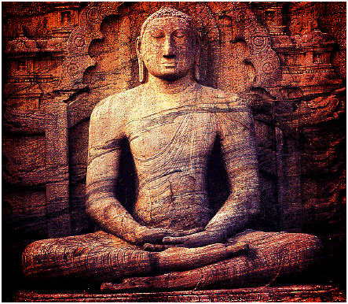

With the practice of meditation you become capable of enabling yourself to enjoy an indestructible sense of well-being while engaging any life activity.
This discipline refers to a broad variety of mindful practices, which the individual uses to train the mind or induce alter state of consciousness. It has been scientifically proven that the regular practice of meditation can deliver you boundless benefits in every field of your life.
